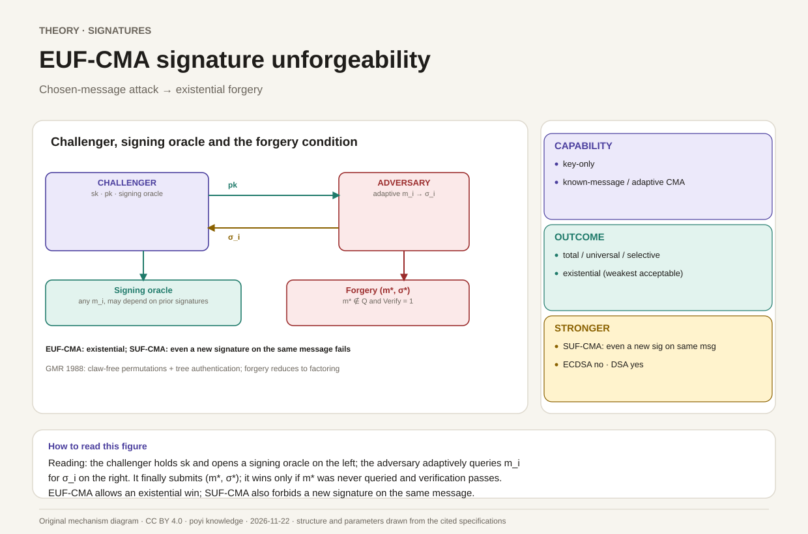
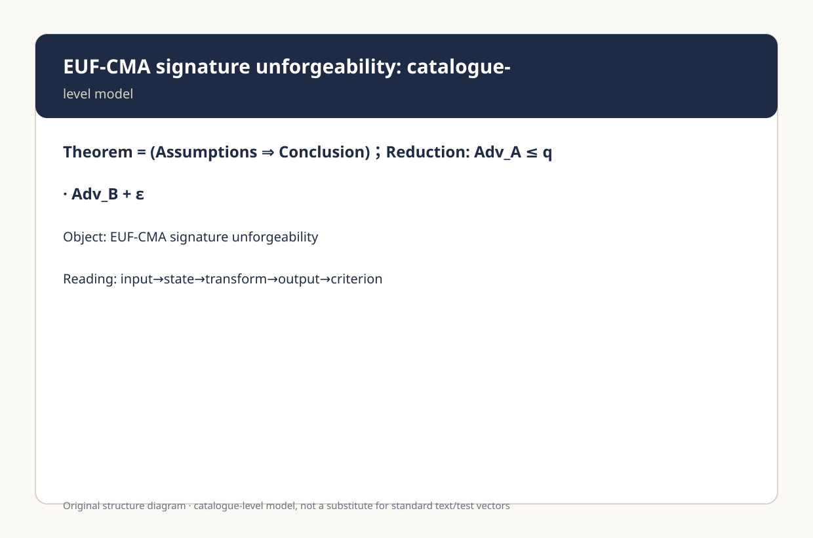

Principles
Theorem: EUF-CMA signature unforgeability (EUF-CMA 签名不可伪造). ### The game
EUF-CMA is “existential unforgeability under adaptive chosen-message attack”. The challenger generates (pk, sk), gives pk to the adversary and opens a signing oracle: the adversary adaptively submits any messages m_i and receives σ_i. At the end the adversary outputs (m*, σ*); it wins if m* was never queried and Verify(pk, m*, σ*) = 1. ### Why “existential”
The adversary need not forge a designated message; any valid new message/signature pair it did not query is a win. This is weaker than “universal forgery” (forge any message) and “selective forgery” (forge a message chosen in advance), but it is still the minimum acceptable bar for a signature scheme: EUF-CMA security means no efficient adversary wins this game with non-negligible probability.

Why it matters
Diffie–Hellman proposed signatures in 1976 and RSA gave the first usable construction in 1978, but early definitions only asked whether an adversary with the public key could forge; they did not model an adversary who first obtains many signatures. Goldwasser–Micali–Rivest in 1988 separated attack capabilities from attack outcomes and gave the GMR scheme with a proof of EUF-CMA.
GMR uses a claw-free pair of permutations (realizable from factoring) for randomized signing, then tree authentication extends a one-time signature into a multi-message one. The paper proves that even an adaptive signing-oracle adversary's forgery is equivalent to factoring; this was the first rigorous EUF-CMA scheme of practical type.
Applications
EUF-CMA is the security target for RSA-PSS, DSA, ECDSA and EdDSA, and the analysis baseline for TLS certificates, code signing, software updates and blockchain signatures. When a protocol says “signatures cannot be forged”, it usually means EUF-CMA unless SUF-CMA is stated.
SUF-CMA (strong unforgeability) also forbids a new signature on the same message: given (m, σ), the adversary cannot output σ′ ≠ σ with Verify(m, σ′) = 1. Deterministic signatures such as FDH-RSA are usually SUF by construction; ECDSA is not SUF because (r, s) is malleable, while DSA has been proved SUF. If replay or transaction-ID mutation matters, specify SUF-CMA.

Limits & attacks
It does not cover key-substitution/rogue-key attacks, the signer's implementation (nonce reuse, side channels), model differences in aggregate signatures, or quantum security. EUF-CMA is asymptotic; concrete parameters still need exact security bounds.
Treating ECDSA's (r, s) malleability as a “forgery”; treating EUF-CMA as SUF-CMA; verifying individual signatures in an aggregate without key binding; reusing a nonce in EdDSA. These are selection or implementation errors, not flaws in the EUF-CMA definition.
History
Goldwasser, Micali and Rivest published “A Digital Signature Scheme Secure Against Adaptive Chosen-Message Attacks” in SIAM Journal on Computing in 1988, systematically defining key-only/known-message/adaptive-chosen-message attacks and total/universal/selective/existential forgeries.
Bellare–Micali, Naor–Yung and Rompel weakened the assumption toward one-way functions; Bellare–Rogaway gave exact bounds and RSA-PSS in 1993/1996; Fersch–Kiltz–Poettering proved DSA's SUF-CMA, and Brendel et al. proved IETF EdDSA's SUF-CMA in 2021.
Worked example & verification
Formal model and reproduction steps
[\Pr[\mathrm{Bad}_A(\lambda)]\le \varepsilon(\lambda)]
EUF-CMA signature unforgeability: the registered public parameters, key material or randomness, and message are mapped through the stated transformation to an output checked against the registered criterion. The worked example is a structural reproduction, not a new test vector; parameter ranges, standard versions and implementation details remain source-bound.
References
- Wikipedia search entry for EUF-CMA 签名不可伪造. https://zh.wikipedia.org/w/index.php?search=EUF-CMA%20%E7%AD%BE%E5%90%8D%E4%B8%8D%E5%8F%AF%E4%BC%AA%E9%80%A0
- Handbook of Applied Cryptography (Menezes, van Oorschot, Vanstone). https://www.cacr.math.uwaterloo.ca/hac/